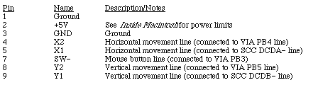
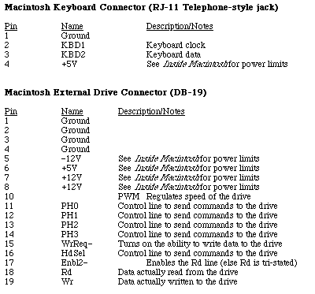
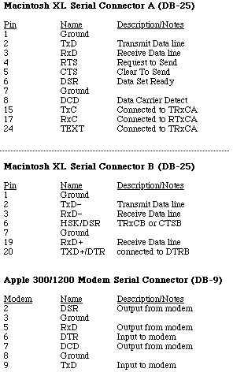
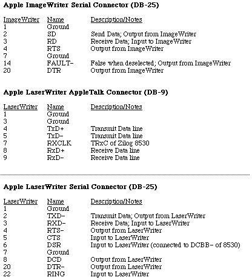
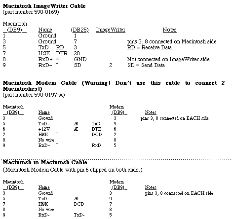
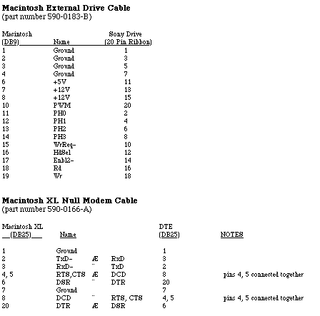
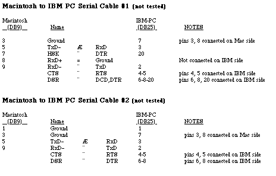

Legacy Document
Important: This document is part of the Legacy section of the ADC Reference Library. This information should not be used for new development.
Current information on this Reference Library topic can be found here:
ADC Home > Reference Library > Technical Notes > Legacy Documents > Hardware & Drivers >
Important: This document is part of the Legacy section of the ADC Reference Library. This information should not be used for new development.
Current information on this Reference Library topic can be found here:
|
IntroductionBelow are pinout descriptions for the Macintosh ports, cables, and various other products. Please refer to the Hardware chapter of Inside Macintosh and the Macintosh Hardware Reference Manual for more information, especially about power limits. Note that unconnected pins are omitted. Macintosh Port PinoutsMacintosh Serial Connectors (DB-9)
Macintosh Mouse Connector (DB-9)   Other Pinouts  Macintosh Cable PinoutsNote for the cable descriptions below: The arrows ("Æ") show which side is an input and which is an output. For example, the notation "a Æ b" means that signal "a" is an output and "b" is an input. When pins are said to be connected on a side in the Notes column, it means the pins are connected on that side of the connector.   Macintosh to Non-Apple Product Cable Pinouts ReferencesMacintosh Hardware Reference Manual Technical Note M.HW. MacPlusPinouts -- Macintosh Plus Pinouts Downloadables
|
|